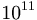
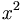

De: La Frikipedia, la enciclopedia extremadamente seria.
De: La Frikipedia, la enciclopedia extremadamente seria. De: La Frikipedia, la enciclopedia extremadamente seria.
 Atención, atención: Desorden del copón Atención, atención: Desorden del copón El constructor/editor de este artículo sigue los dictados de su inspiración, y por tanto deja las frases y apartados a medias mientras edita. Es altamente recomendable no leer este artículo mientras dure la edición, so consecuencia de sufrir esguince cerebral. |
| De la serie planetas para todos: | ||
| Tamaplanet | ||
| ||
| Diámetro | 123543 píxeles | |
| Inclinación | Del 65% | |
| Atmósfera | Cargada de tamagonio gaseoso en un 11'34% | |
| Gravedad | La de un accidente de tráfico | |
| Satélites | Principalmente meteorológicos, aunque hay alguno de TV | |
| Sistema planetario | De 5 ecuaciones y 7 incógnitas | |
| Estrella en torno a la que gira | En torno a la Estardemor | |
| ¿Existe vida inteligente? | Lo bastante como para conquistarnos (aunque no hace falta mucha sesera para eso) | |
| Razas | Muchas, pero destaca la de los Tamagotchis, entre los que a su vez destacan los patopollos | |
| Distancia desde la Tierra | A un tiro de piedra (si la tira Hulk) | |
| Descubridor | El bedel de la NASA mirando sin permiso por el telescopio | |
Planeta situado en el Sector Nillo, compuesto en su mayor parte por el elemento conocido como tamagonio, principal recurso minero del planeta, y la base de la mayor parte de sus formas de vida. Con una superficie aproximada de (redondeo al alza) 2· píxeles cuadrados (p), tiene una población de más de 500 millones de habitantes, contando solamente a la especie inteligente que predomina en el planeta: los Tamagotchis, unos seres con gran capacidad para mutar y evolucionar.
¿Ha quedado claro? Esto, a pesar de parecer horrible a primera vista, tiene como ventaja que no obligan a los niños a estudiar Geografía de pequeños. Total, lo que ahora está aquí, dentro de cinco minutos puede estar por donde Cristo perdió las alpargatas, así que ¿para qué aprenderlo?.
Los Tamagotchis son una civilización que lleva en Tamaplanet casi desde su formación, siendo la especie predominante y la única inteligente. Son unos seres muy civilizados, que apenas tienen disputas entre sí, gracias a la gran gestión a nivel planetario que lleva el Consejo Patopollo, formado por la élite de la especie, los más inteligentes y los más bonitos. Para llegar hasta este estado de paz y prosperidad atravesaron varias etapas. Todos los acontecimientos siguen el calendario Tamaguiano, que empieza en el 0 d.T. (después de Tamacristo):
Tras el reciente descubrimiento de las baterías que se recargaban con energía térmica (un recurso que crecía en determinados árboles), se inició una dura pugna por controlar las refinerías de este escaso bien. En esta guerra se enfrentaron a la otra especie inteligente del planeta: Los conejos de Duracell. Los Tamagotchis las pasaron putas, básicamente porque los Conejos aguantaban, y aguantaban, y aguantaban... Pero un grupo de 512 Tamagotchis liderado por Tamónidas logró contener en un desfiladero a 20.480 Conejos liderados por Conerxes.
Los Tamagotchis empezaron a hacer lo que mejor se les daba. Cagar. Mucho. En cuestión de minutos, los Conejos debían hacer frente a un enorme muro de excrementos si querían enfrentarse a las tropas de Tamagónidas, que atacaban desde lo alto del muro. Los excrementos eran altamente tóxicos, por lo que una parte importante de los Conejos murió en el ascenso. Al llegar arriba, se encontraron con tropas Tamagotchis suicidas, que habían contraído varias enfermedades y las estaban propagando entre los Conejos.Gracias a Tamagónidas y sus guerreros, los refuerzos Tamagotchis lograron erradicar por completo la amenaza conejil. Solamente quedó uno, que huyó al espacio y más tarde cayó en la Tierra, pero ésa es otra historia...
Los patopollos fueron rescatados, y su especie se convirtió en la élite de la raza, gobernando el planeta entero con sabiduría y paz.
Antes incluso de estas intrigas políticas, los Tamagotchis no eran más que una nueva especie que pugnaba por sobrevivir. Aquí se detallan los pasos evolutivos del género Tamus:
Aquí, los Tamagotchis más fuertes guiaban al resto de la especie, que se dividía en clanes refugiados en cuevas. Las principales evoluciones que se daban eran de mucho músculo y testosterona, mucho arrear y procrear. Entre esta etapa y la siguiente se produce un salto evolutivo cuyas causas se desconocen, que hizo que el Tamus saliera de las cuevas.
En esta época se instalaron los primeros asentamientos fijos. Aquí se daban todo tipo de mutaciones, ya que el ingenio del género Tamus se había disparado, mutaban sus cuerpos en herramientas que les permitían construir sus gilipolleces varias.
En esta época alcanzan su máximo evolutivo, perdiendo en gran parte su capacidad de cambio pero ganando en inteligencia, lo que llevó a la formación de ciudades y estados, y esto desembocó, a su vez, en grandes guerras como las que hemos visto antes. El invento que marcó esta etapa fue el agujero de las rosquillas (nunca un vacío supo tan delicioso).
Tamaplanet tiene un montón de animales y plantas, cuyo principal sustento es la caca de los Tamagotchis. Sin embargo, en los últimos años el número de cacas ha crecido enormemente, y no toda es eliminada por los animales y plantas del planeta. Por esa razón empezaron a buscar un planeta donde despositar su mierda sobrante, y usarlo como depósito de emergencia. Como eran ecologistas, buscaban un planeta en el que el impacto medioambiental de las cacas no fuera tan grande como para repercutir en su ecosistema. Un día encontraron un planeta habitado por varias especies inteligentes, pero gobernado por la tercera de ellas. Dicho planeta había sido convertido en un vertedero gigante por los integrantes de la tercera especie más inteligente que lo poblaba: los humanos. Así, los Tamagotchis posaron su mirada en la Tierra.
Tan pronto como se decidió la Tierra como objetivo, se empezó a preparar una campaña de invasión a gran escala, que empleó principalmente a gran cantidad de agentes encubiertos, que fueron metidos en sus huevicápsulas selladas y enviados a nuestro planeta. Su función primordial era la de comer mucho para agotar los recursos de nuestra raza, cagar mucho para intoxicarnos, enfermar mucho para provocar pandemias y morirse mucho para que los niños terrestres se deprimieran y cometiesen oleadas de suicidios como los que acontecieron tras conocerse el final de la serie "Doraemon". Una vez debilitadas nuestras defensas, nos invadirían y nos pasarían a cuchillo a todos. De momento su plan se encuentra en la primera fase, pero se halla cerca de completarse...
| Planetas |
|---|
| Arrozconté § Coruscant § Ganímedes § Luna Lunera § Marte § Mateyko § Namek § Nintendus 64 § Omicrón-Persei 8 § Potato World § Península Ibérica § Planeta Agostini § Planeta friki § Planeta Klingon § Plutón § Raticulín § Saturno § Stroggos § Tamaplanet § Tatooine § Tierra § Venus § Wikiplanet |
Autor(es):